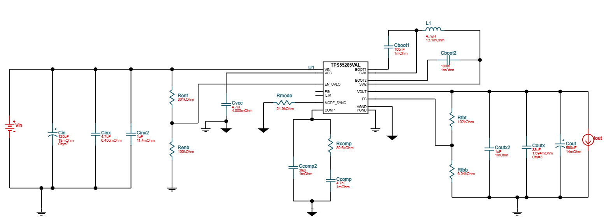
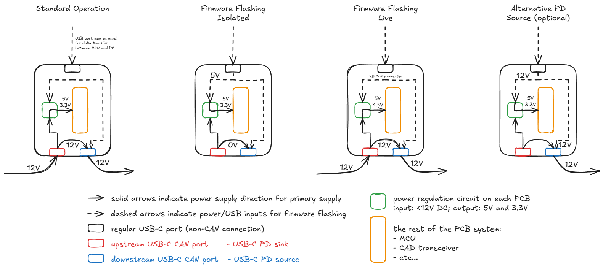
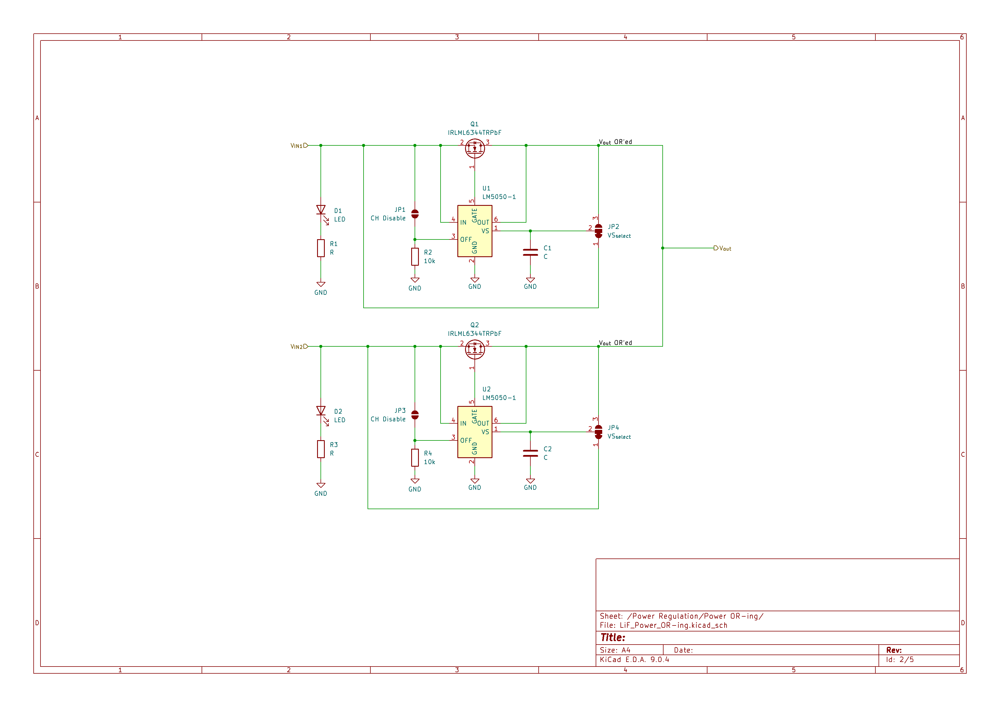
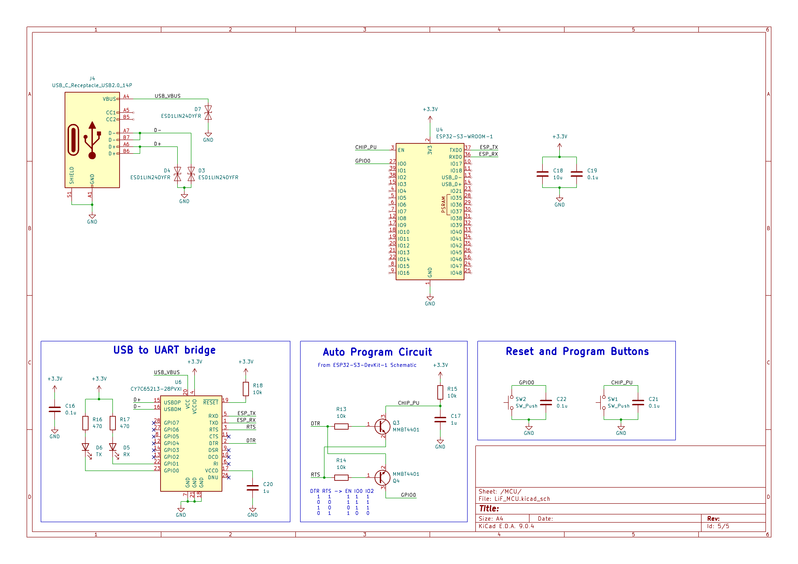

Initially, I thought I can reuse Project MoP Power PCB Power
Regulation circuit in this PCB. However, 5V switching regulator
from that design can only operate in buck mode, and will not
allow 5V pass-through. This is a crucial feature due to USB PD
negotiation. The board will initially get supplied with 5V, and
only the PD negotiation is completed, the higher voltage will
get supplied. Therefore, I need to redesign the 5V regulator.
These design parameters resulted in a lot of various possible
circuits, however, a lot of them required custom inductors or
transformers. Such designs were excluded from the search manually.
When I tried to filter out QFN and BGA IC packages, the
resulting designs were inefficient, bulky, and required a large
BOM count. In order to simplify component sourcing and reduce
PCB cost, lead-less packages were allowed. As the result,
TPS55285VALR IC[1] proved to be the best option. It requires only a
handful of supporting passive components, uses an off-the-shelf
inductor, integrates MOSFETs, and fulfills all the primary design
requirements. Link to shared design[2].

TI Webench-generated power regulator design with TPS55285VALR IC
TPS55285 Mode Pin and Resistor Divider Updates
I further modified the design to reduce the BOM count.
Mode Pin
WEBENCH shows a 24.9k resistor to ground on the MODE pin. According to
Table 6-2 of the TPS55285 datasheet, this configuration results in an
I2C address of 0x75 and default output enable set to
1. Leaving the MODE pin open/disconnected changes the I2C
address to 0x74, while still keeping default output enable set
to 1.
Based on this, RMODE can be removed from the circuit
if the 0x74 I2C address is acceptable for the design.
Feedback and UVLO Resistor Dividers
Original FB divider uses 102k and 6.02k resistors.
Original UVLO divider uses 301k and 100k resistors.
The FB divider is being modified to use 100k and 5.92k resistors while
keeping approximately the same voltage ratio of 0.0559.
This removes the 102k resistor from the BOM.
The UVLO threshold was changed from 4.9V to 4.8V, and the 302k resistor
was replaced with 294k.
Input Capacitance
Original design uses 2x 120uF electrolytic capacitors, plus 4.7uF and
1uF ceramic capacitors.
The input capacitance is being changed to 1x 560uF capacitor, 33uF, and
1uF to simplify the BOM.
Power OR-ing circuit design
Since there are 2 potential voltage sources for the PCB:
Programming and Debugging USB-C port and CAN-enabled USB-C port,
a power OR-ing circuit is needed to allow seamless operation of
the device with 1 or 2 power sources being connected.

USB PD modes of operation
I found LN5050-1IC[3]] which in combination with an external MOSFET
allows to implement power OR-ing circuit in an "ideal diode"
configuration. Several of such devices can be connected in
parallel to allow multiple input power sources.

Power OR-ing circuit using LN5050-1 IC for 2 channels
However, I still need to verify if this configuration is safe
to use when 2 power sources have different voltages, e.g.
15V PD from CAN USB-C and 5V from programming USB-C.
MCU selection
ESP32-S3 was chosen as the MCU series for our design. ESP WROOM
modules integrate a lot of strapping components required for MCU
operation. The resulting circuit around the module is very minimal.
As such, ESP32-S3-WROOM-1 package was chosen. Compared to 1U
variant, it integrates a PCB antenna, so if future wireless
features need to be added, there is no need to add an external
antenna. Additionally, 1U module can be installed in place of 1
variant, but not the other way around due to its smaller size
and lack of PCB clearance requirements.
The final thing to select is FLASH and RAM size. The difference
between base model and 8MB FLASH and 8MB SRAM models is 1.2CAD,
so it is fairly inconsequential.
I started designing an MCU schematics sheet. I used
ESP32-S3-DevKit-1 dev board schematics
as a reference for the necessary strapping components,
flashing circuitry, and reset logic.

ESP32-S3 Schematics Sheet, Initials
The flashing circuitry uses a placeholder USB-C connector,
CY7C65213-28PVXI USB-to-UART bridge IC[4] , and 2x NPN transistors [5]
to automatically enter flashing mode.